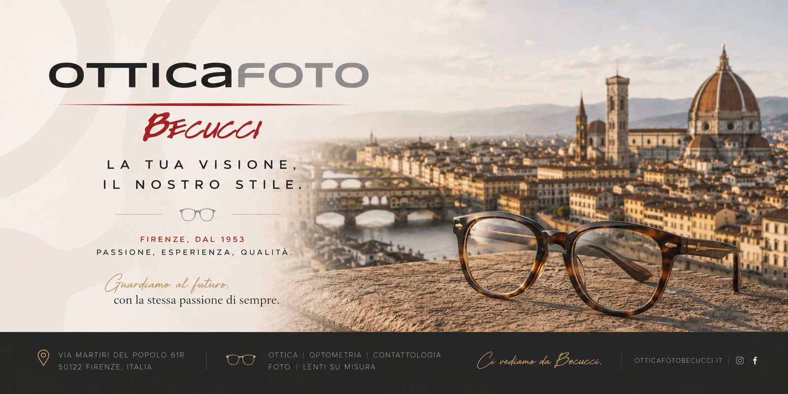

Occhiali da sole
Ray-Ban
Aviator Classic

Occhiali, lenti su misura e controllo della vista gratuito.
Tre generazioni di ottici a Firenze.
Un esame accurato, sempre senza impegno.
Progressive e personalizzate in laboratorio.
Le migliori firme, selezionate per te.
Dal sole quotidiano allo sport, fino alle lenti a contatto: esplora le nostre categorie.
Una selezione delle montature delle marche che trattiamo. Vieni a provarle: ti aiutiamo a scegliere la tua.
Aviator Classic

Wayfarer

Clubmaster

Round Metal

Cat-Eye

Montatura ottica

Sport

Pilot
Ogni esigenza visiva ha la sua soluzione. Ecco i principali tipi di lenti che realizziamo su misura.

Lenti a fuoco singolo, ideali per correggere la visione a una distanza (da lontano o da vicino). La soluzione più semplice ed efficace.

Visione nitida a tutte le distanze — lontano, intermedio e vicino — senza stacchi né linee. La scelta più versatile per la presbiopia.

Due aree di messa a fuoco nella stessa lente, da lontano e da vicino, separate da una linea. Comode per chi alterna le due distanze.

Si scuriscono automaticamente alla luce solare e tornano chiare al chiuso. Un solo occhiale per ogni condizione di luce.

Pensate per ufficio e computer: ottimizzano la visione intermedia e ravvicinata, riducendo l'affaticamento visivo.

Riducono la luce blu emessa da schermi e dispositivi, per un maggior comfort durante le lunghe ore davanti al monitor.

Protezione UV e correzione visiva in un unico occhiale da sole, disponibili in diverse colorazioni e gradazioni.
L'occhiale giusto non si sceglie da soli. Il nostro consulente Martin ti guida tra forme, colori e materiali per trovare la montatura perfetta per il tuo viso e la tua personalità — nel rispetto del tuo budget.
Competenza tecnica e attenzione personale, dal controllo della vista alla scelta della montatura.
Un esame accurato per individuare la correzione più adatta, senza alcun costo e senza impegno.
Montature delle migliori marche per ogni stile, con lenti antiriflesso e protezione UV.
Soluzioni su misura per vedere bene a tutte le distanze, calibrate sulle tue abitudini.
Lenti di varie durate — giornaliere, mensili e tradizionali — con consigli sull'uso corretto.
Correzioni dedicate e assistenza specializzata per chi ha affrontato interventi alla vista.
Ti aiutiamo a trovare la montatura perfetta per il tuo viso, il tuo gusto e il tuo budget.

Ottica Becucci nasce nel 1953 e da allora offre ai propri clienti le soluzioni tecniche più adatte per correggere qualsiasi tipo di difetto visivo: dalla miopia all'ipermetropia, fino agli astigmatismi elevati.
Realizziamo lenti progressive personalizzate e soluzioni post-operatorie, disponiamo di lenti a contatto di varie durate e di un'ampia gamma di occhiali da sole e montature. Prestiamo particolare attenzione alle ultime tendenze, al gusto e alle esigenze di ogni cliente.
Il nostro consulente Martin ti accompagna nella scelta dello stile più adatto a te, sempre nel rispetto del tuo budget.


Passa in negozio e scopri le promozioni del momento sui tuoi occhiali.
Sconto del 40% sulle montature di marca con l'acquisto di un occhiale completo (montatura + lenti).
Sconto del 20% su una selezione di occhiali da sole delle migliori marche.
Le promozioni possono variare. Contattaci o vieni in negozio per conoscere le offerte attive oggi.
Siamo in Via Martiri del Popolo, a pochi passi dal centro. Ti aspettiamo!
| Lunedì | 15:30 – 19:15 |
|---|---|
| Martedì – Venerdì | 09:00 – 13:00 · 15:30 – 19:15 |
| Sabato | 10:00 – 13:00 · 15:00 – 19:00 |
| Domenica | Chiuso |
La mappa è fornita da Google Maps, che può installare cookie. Accetta per visualizzarla.
Apri in Google MapsPrenota oggi il tuo controllo della vista gratuito o chiamaci per una consulenza personalizzata.